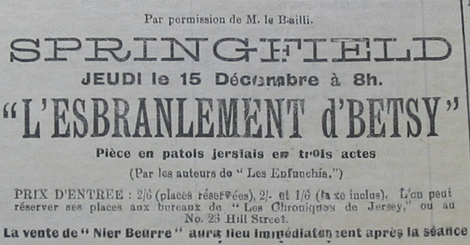
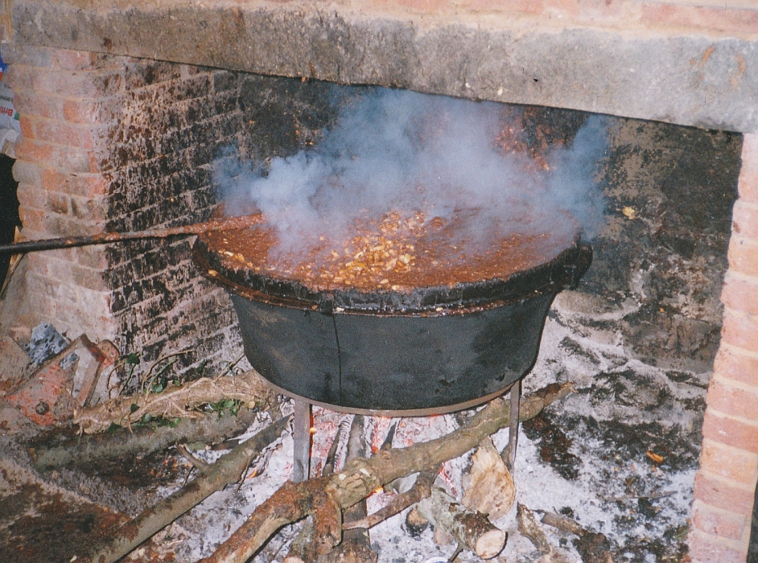

Ch'n'est pas souvent que j'sortons ensemblye Marie Hibou et mé, mais l'aut'e sé je fûmes touos les deux à Springfield pour vaie "l'Ebranlement d'Betsy."
Ou viyiz j'avions vendu tant d'titchets à la boutique, que les organisateurs donnirent une passe gratuite à tout l'personnel.
Ch'tait une occasion à n'pas mantchi et Marie Hibou nouos informi que rain ne l'empêch'hait d'y aller. Mé, j'y fut en qualité d'journaliste pour en faithe un rapport dans not'e gâzette, car nou n'peut pas compter sus l'Chef acheteu, i' prétend qu'il a assez à faithe à êcrithe des articlyes d'fond et des critiques sus chein qui s'passe dans l's Etats, sans jouer l'rôle de simplye rapporteur.
Ch'est pourtchi, che fus don mé qu'étais supposé de donner un résumé d'la séthée.
J'en avais êcrit sept ou huit colonnes mais l'Chef passi bain vite san blu crayon à travers de tout chenna me disant que "Les Chroniques" n'était pas un journal de theâtre.
J'avais pourtant prins bain d'la peine à faithe man rapport, j'avais louangi les participants qu'avaient joué lus rôle comme i' faut et j'avais critichi les siens que je criyais qui laissaient à d'sither, sustout les siens qui touânaient l'dos à l'auditouaithe en récitant lus lignes.
Mais tout considethé la séthée eut un grand succès et je fus bain onné de vaie que quand les gens se minrent à crier pour les auteurs, ni l'un ni l'autre n'eut l'couothage de s'montrer.
I'sont bain trop modestes ches deux garçons-là!
Mes amins de St. Ouen voudraient bain vaie la pièche repétée dans lus pâraisse, et j'espèthe qu'oulle y s'sa car ch'est seux que l'Parish Hall es'sait trop p'tit et Pierre Rondé et Betsy es'saient seux d'une chaleureuse reception.
Quant à la vente de nièr beurre à la fin d'la séthée, che fut une réussite absolue, du mains du point d'veue des organisateurs.
Marie et mé j'avions pensé que je nos en allions pouver en acater une djaixaine de potées à bouan marchi mais quand j'vûmes que George de Carteret, l'encanteur, était à les banni à djaix chelins la potée, je dis à Marie, "Je n'pouvons pas y touchi à ches prix-là! N'ai pas l'malheur de bider! Je peux en aver miyeu marchi qu'chenna."
Mais je ne r'vimmes pas sans quand-même.
Marie avait fait s'n idée d'en aver et oulle avait prins la précaution d'apporter deustrais pots dans un pagas.
Et v'chin comment ou s'y print.

Quand George était à faithe la vendue et que toutes les membres de la compagnie étaient à d'livrer les potées parmi les acateurs dans l'auditouaithe, Marie s'en fu par en driéthe de l'estrade ouest qu'ou trouvi la grande paîle dans tchi que l'nier beurre avait 'té fait. Ou trouvi qu'ou n'avait pas 'té viédgie comme i' faut et qu'i' restait oquo une masse de gratin.
Avec une tchullyi qu'oulle avait apporté dans sa pouchette ou s'mis à gratter les bords du bachin avec le rêsultat qu'oulle en ramassi chinq ou siex livres qu'ou rapporti dans san pagas.
Jamais je n'avions ieu du nier beurre à si bouan marchi et je vos asseuthe qu'il a 'té bain apprêcié par touos les p'tits Caouains.
Viyiz étout: